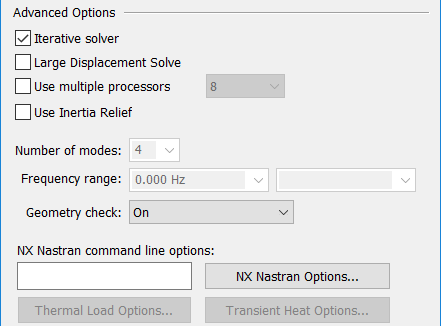
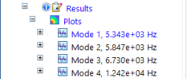
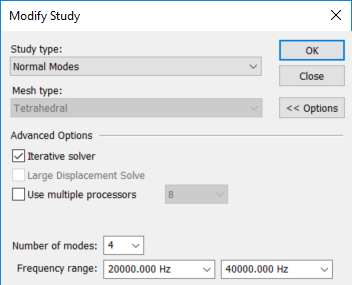
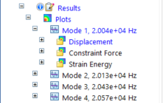
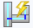
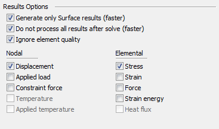

Create Study (or Modify Study) dialog box
This dialog box is displayed when you select the New Study command or the Modify Study command, which is located on the context menu of a selected study.

- Study type
-
Specifies the type of study:
-
Structural studies include linear static, modal, and buckling studies.
-
Thermal studies include heat transfer (steady state and transient) and thermal stress analysis.
-
Coupled studies apply the results of one study as input to another study. For example, thermal stress analysis couples a thermal study with a structural study.
When a study is active, the study type is displayed on the ribbon in the Study group.
-
- Mesh type
-
Specifies the geometry mesh type to use for the analysis.
- Tetrahedral
-
This is the default option for part and assembly models.
- Surface
-
Use a surface mesh for thin wall parts and for sheet metal. This is the default option for sheet metal models.
- General Bodies
-
For part and sheet metal models, use a General Bodies Mesh to create a continuous mesh from the collection of surface bodies and solid bodies united with the Unite Bodies command. This is useful for meshing parts with T-shaped junctions.
Example:T-shaped junctions at (A) and (B).


- Mixed and General Bodies
-
For assembly models that contain sheet metal and solid parts, design bodies, or united bodies, use the Mixed and General Bodies mesh type to create a continuous mesh.
- Beam
-
Beam meshing is available only for structural frame models.
- OK
-
Creates the study and adds a default study name to the Simulation pane. Whenever possible, geometry is selected and added to the study automatically. When not, you are prompted to select the geometry to be analyzed. See Create a study.
When you use the Modify Study command from the shortcut menu of a study selected in the Simulation pane, the OK button saves the changes that you made in the Modify Study dialog box.
- Options
-
Expands the Create Study dialog box to show the study creation or modification options in the Advanced Options, Connector Options, and Results Options groups.
Advanced Options
Modifies the default Solid Edge Simulation processing settings for creating the specified study type.

- Iterative solver
-
Specifies that the NX Nastran iterative solver is used to solve the analysis. This efficiently solves large models containing mainly higher-order 3D solid elements.
-
For studies using a tetrahedral mesh, this option is set by default.
-
For studies using a surface mesh, this option is cleared.
-
- Large Displacement Solve
-
Specifies that incremental processing is used to solve a Linear Static study of a model in which the deflection of the model is large relative to the dimensions of the model. This produces a more accurate solution.
Consider a sheet metal part that has a very small thickness. Selecting the Large Displacement Solve option ensures that the analysis computes the displacement relative to the thickness of the part. The incremental processing updates the stiffness matrix of the mesh each time the part deforms due to the loads applied to it. The resulting mesh is a better fit by the time a solution is found.
Note:For assembly models, the NX Nastran does not support Large Displacement Solve option and therefore not available in Solid Edge Simulation.
Studies solved with this option selected are listed in the Simulation pane like this:
Example:Static Study 1 (Large Displacement)
- Use multiple processors
-
Specifies the number of processors to be used in solving the study. The default value is the total number of processors.
Note:Using all the processors may impact the performance of other tasks during the processing.
- Use Inertia Relief
-
For structural studies of assemblies in motion, specifies that the study is solved by calculating the inertia forces required for a balanced-condition static analysis without the use of constraints. Use this option when you want to obtain a static solution for a structure that is not stable, but is in a state of equilibrium under loading.
Inertia relief is an NX Nastran option that simulates unconstrained structures in a static analysis. Examples of structures in this state are aircraft in flight, cars in motion, and spacecraft in orbit. Each of these structures has one or more unconstrained, rigid body motions, which cannot be solved using conventional static analysis. With inertia relief, the mass of the structure resists the applied loadings. The structure is in a state of static equilibrium, even though it is unconstrained in any or all degrees of freedom.
Example:The classic use case for inertia relief is an airplane with no rigid body constraints and in a steady-state flight condition. You want to apply a set of aerodynamic forces, which are to be balanced by the inertia forces of the airplane. Inertia relief is the method by which the solver calculates the inertia forces required for a static analysis in balanced flight condition.
- Number of modes
-
Specifies the default number of modes desired for a normal modes analysis or linear buckling study. Values must be ≥1 and ≤20. A normal modes analysis is also referred to as a modal analysis or frequency analysis.
If you change this value, it is applied to new studies, not existing studies.
- Frequency range
-
For a normal modes or linear buckling study, you can specify a frequency range of interest using the Frequency range boxes. Values typed in scientific notation are converted to full decimal format.
Lower Frequency—The value in the first box specifies the lower frequency range. Values are ≥0.
Upper Frequency—The value in the second box specifies the upper frequency range. This value must be greater than the value in the lower frequency range. If blank, the value is infinity.
You can solve a normal modes study, review the resulting frequency modes, and then modify the study to solve for a subset of frequencies identified in the first solution.
-
Solve the study first using default study settings to find the natural frequencies at four modes:

-
Change the study inputs to specify a user-defined range within the original results. For example, if you enter 2e+4 and 4e+4, the values are converted as shown in this example:

-
Solve the study again to see the modes that fall just within the defined range:

- Geometry check
-
Overrides the NX Nastran quality check threshold and allows solution processing to continue in cases where the mesh creates less than desirable element shapes. NX Nastran has default element quality thresholds to evaluate the geometry elements during solution processing.
-
When set to On, NX Nastran uses the default element quality thresholds to evaluate the geometry elements during solution processing. This is the default option.
-
When set to Warning Only, NX Nastran performs the same quality checks, but the checks that exceed tolerance values produce informational and warning messages in the NX Nastran output files, rather than cause the solution to fail.
Note:-
The Warning Only option controls the severity of informational and warning messages produced by geometry checking. These checks are different from a series of mandatory system-level checks that NX Nastran always performs.
-
When set to Warning Only, the GEOMCHECK commands are written to the Executive Control section of the NX Nastran input file.
-
- NX Nastran command line options
-
This box may display a string of default command line options to be used by NX Nastran when the analysis is solved. These options are stored with the study name and saved in the Solid Edge Simulation options file. In most cases, this box is blank.
The default options displayed in this box are set on the Simulation tab (Solid Edge Options dialog box). You also can type command line options in the box. For more information, see NX Nastran processing options.
- Thermal Load Options...
-
Opens the Thermal Load Options dialog box for you to specify advanced options for thermal loads. These include thermal characteristics for convection, and the type of formulation to use for different types of heat transfer problems.
- NX Nastran Options...
-
Provides access to all NX Nastran keyword options that are supported by, and made available in, Solid Edge Simulation. The NX Nastran Options... button displays a multi-tabbed text edit window for advanced users to review default options and to add and edit user-defined keywords and values.
To learn more, see Using the NX Nastran study keyword editor in NX Nastran processing options.
- Transient Heat Options...
-
Defines and modifies the study processing parameters for a transient heat transfer study.
When you choose Transient Heat Transfer as the study type, the Transient Heat Options dialog box is automatically displayed for you to define the study initial temperature, calculation time increments, output step, and end time. When you want to modify the study parameters, select the Transient Heat Options... button to reopen the dialog box.
- Harmonic Response Options...
-
Defines and modifies the study processing parameters for Harmonic response studies.
When you choose Harmonic Response as the study type, the Options: Harmonic Frequency Analysis dialog box is opened for you to define the study input modal frequencies and structural damping. When you want to modify the study parameters, select the Harmonic Response Options... button to reopen the dialog box.
Connector Options
For assembly models, you can use the Connector Options section to specify that glue, no penetration contact, or thermal connectors are created automatically when the study is initiated, based on the mate relationships defined in the assembly and the type of study.

- Create connectors
-
Specifies that assembly connectors are created automatically when you define a new study.
Note:Selecting this option is equivalent to selecting the Simulation tab→Connectors group→Auto command
 .
.Similarly, the following options are equivalent to the options on the Auto command bar:
- Single connection per face pair
-
Select this option to apply one connector per pair of faces rather than multiple connectors per face pair. This results in fewer connections added to the model.
- Thermal connectors
-
Specifies a thermal connection type between assembly faces in a heat transfer study and in a thermal coupled study. A thermal coupled study requires two sets of connectors. For example, in a Steady State Heat Transfer + Linear Static study, you can specify a glue connector for both studies, or you can apply a Thermal connector to the thermal study and a Glue connector to the structural study.
- Thermal
-
Specifies that thermal connectors are created automatically in a heat transfer study or thermal coupled study to conduct heat between two surfaces.
Use thermal contacts where there are insulated faces and thermal resistance.
- Thermal Glue
-
Specifies that glue connectors are created automatically on faces in a heat transfer study or thermal coupled study. A glue connector creates a connection like a stiff spring.
- Other connector type
-
Specifies the connection type between assembly faces in a structural study and in a thermal coupled study.
- Glue
-
A glue connector creates a connection like a stiff spring.
- No Penetration
-
A no penetration connector prevents faces that touch from penetrating.
Note:The No Penetration contact connector is equivalent to the NX Nastran Linear Contact connector.
For more information, see Glue and no penetration contact connectors.
- Properties
-
Displays the Assembly Connector Properties dialog box, where you can specify additional values for no penetration, glue, and thermal resistance connectors.
- Maximum rigid link length
-
In a frame assembly with a beam mesh type, the check box specifies that you want to generate rigid links automatically between beam curves when the study is created. The displayed value defines the maximum length for all rigid links generated automatically when the study is created. The default value is equal to the length of the largest beam cross-section for coplanar beams.
The Maximum rigid link length value is also used:
-
To generate links automatically when you select the Simulation tab→Rigid Links group→Auto

command. -
As the default value displayed on the command bar for a rigid link created manually between two beam curves using the Manual
 command.
command.
Note:When creating rigid links automatically, we recommend that you use the default value for Maximum rigid link length. If your model is fully constrained using the default maximum rigid link length value, do not change the default value. Increasing the default value may create unwanted rigid links. For information about how to determine if your model is fully constrained, see Rigid link connectors.
Note:The Manual and Auto rigid link commands are not available in thermal studies, because rigid links do not participate in the transfer of thermal loads.
-
Results Options
Some post-processing options (contours, displacements, animations) use nodal data, while others (criteria plots) use elemental data. The result options you select directly correspond to the result plots that are generated in the study.

You can select nodal and elemental output data to produce different results.
- Generate only Surface results (faster)
-
For tetrahedral meshes and mixed meshes, this option retrieves just the surface results for display in Solid Edge, resulting in faster processing. If you want to see internal nodes and elements in the results, clear this option.
Note:-
The Generate only Surface results (faster) option provides an easy method to mesh all of the surfaces related to a solid, but not mesh the solid itself. You can then use these surfaces for analysis if you actually have a thin part modeled as a solid, or you can review the surface mesh before going to a full solid mesh. Simply review and modify the surface mesh as appropriate, and then use the Mesh command or Remesh command to create a solid mesh from this modified surface mesh.
-
If this option is not available, it is because the global setting for Generate only Surface Results (Faster) is selected on the Simulation page of the Solid Edge Options dialog box.
-
- Do not process all results after solve (faster)
-
When checked, limits the results plots that are preprocessed to just one plot, which is displayed automatically in the Simulation Results environment. You can use the Simulation pane or the command ribbon to choose additional results to process and display on demand, without having to solve the study again.
When unchecked, Solid Edge Simulation solves and then processes all results at once. You may want to clear the check box when processing a solution overnight.
The practical effect of using this option is that plots are processed when they are selected for viewing, rather than having to wait while all results plots are processed before you can see any of them. It also reduces the size of the results file (.ssd) that is stored.
This option also can be set on the Simulation tab (Solid Edge Options dialog box).
Note:Result plots that are not generated when this option is selected still can be processed on demand by doing any of the following in the Simulation Results environment:
-
Generate a plot by double-clicking its node in the Simulation pane.
-
Generate a report using the Create Report command.
-
Animate the results using the Animate command.
To learn more, see Plotting results.
-
- Ignore element quality
-
Complex geometries and smaller mesh sizes can significantly increase the occurrences of poor quality mesh elements. Poor quality mesh elements require processing time to determine. Ignoring poor quality mesh elements is a way to decrease processing time.
- Nodal
-
Specifies the types of node-based data plots to generate with the study results.
- Displacement
-
Plots the X, Y, Z displacement magnitude.
- Applied load
-
Plots the X, Y, Z load magnitude.
- Constraint force
-
Plots the X, Y, Z constraint force magnitude.
- Temperature
-
Plots the temperature at each node in the model.
Temperature plots are the default plots generated for thermal studies; they also are generated for thermal coupled studies (thermal stress analysis).
Temperature plots are shown on the primary model.
- Applied temperature
-
Available only for thermal coupled studies (thermal stress analysis), plots the gradient temperature distribution on the primary, deformed, and undeformed display of the model.
- Beam end reactions (Frame analysis only)
-
Plots the moments, shear forces, axial forces, torque forces and warping torques at the end of each beam.
- Elemental
-
Specifies the types of element-based data plots to generate with the study results.
- Stress
-
Plots the XX, YY, ZZ, XY, YX, ZX determinant, mean, maximum shear, minimum principal, mid-principal, maximum principal, octahedral, and Von Mises data for stress.
- Strain
-
Plots the XX, YY, ZZ, XY, YX, ZX determinant, mean, maximum shear, minimum principal, mid-principal, maximum principal, octahedral, and Von Mises data for strain.
- Force
-
Plots the X, Y, Z force magnitude.
Note:This check box must be selected to generate the stress values (shear, magnitude, axial force, and torque) for fasteners and bolt connectors used in a model. After solving the study, you can review the information in the Bolt Connector Forces Results table. For more information, see Bolt connector simulation results.
- Strain energy
-
Plots strain energy, strain energy density, and strain energy percent.
- Heat flux
-
Plots the thermal energy exchange—the heat flux—in the X, Y, Z direction, and the total thermal energy exchange. Also plots the temperature gradient in the X, Y, Z direction and the total temperature gradient.
Temperature gradient plots show the change in temperature across an element, per unit length.
Nodal and elemental plots can be displayed in the Simulation Results when the Contour option is selected from the Home tab→Show group→Display Options menu.
How do I
Verify simulation material propertiesCreate a study
Create a study using a simplified model
Define a coupled study for thermal stress analysis
Assign units in studies
Define and review a transient heat study
Define a harmonic frequency response study
Learn more
Creating and using studiesUsing materials in studies
Modifying studies
Structural studies
Thermal studies
Using steady state heat transfer studies
Coupled studies
Harmonic response studies
Create and solve a study using GD optimized model
Create and solve a study using an STL model
Defining thermal studies
Look up more details
Transient Heat Options dialog boxOptions: Harmonic Frequency Analysis dialog box